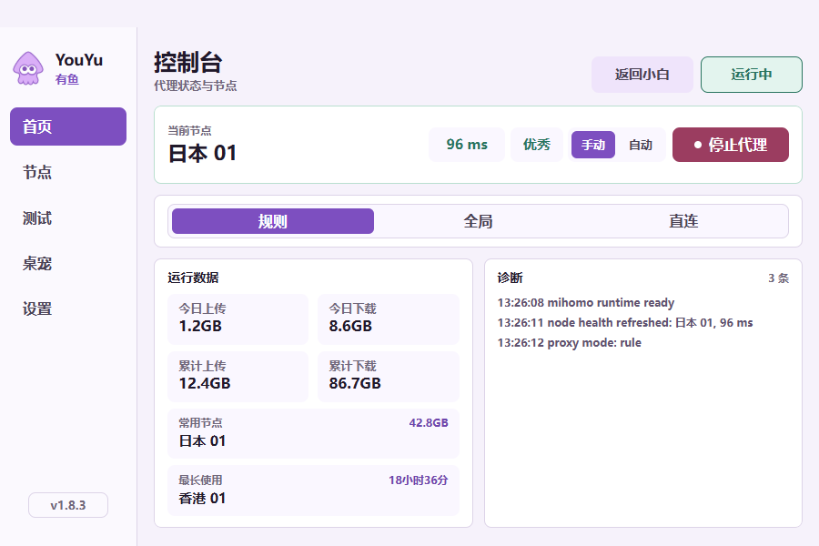

开始使用 YouYu
先完成安装和订阅设置，之后按自己的习惯使用。
安装与开始
- 在下载页选择标准版或无桌宠版，运行安装程序并完成管理员授权。
- 首次打开后按提示完成使用登记。
- 进入专业模式的“设置”，填写并保存自己的订阅地址。公开安装包不内置订阅。
- 启动代理，等待连接状态更新。日常启停可以使用小白模式。
安装程序会创建桌面和开始菜单快捷方式，YouYu 日常使用普通用户权限运行。
小白模式与专业模式
两种模式包含在同一个安装包中。小白模式保留中央连接按钮和状态反馈；专业模式提供首页、节点、测试、桌宠和设置页面。
从小白模式进入专业模式：连续点击窗口左下角 7 次；也可以依次按 ↑ ↑ ↓ ↓ ← → ← → B A 切换模式。专业模式首页的“返回小白”可直接返回。

选择节点，检查连接
在“节点”中可以单独测速、全部测速或切换节点。全部测速期间仍可选择节点，也可以停止本次测速。切换后，首页会同步当前节点和延迟。
“测试”中提供 Steam、AI 服务和常用站点等 15 项检查。先启动代理，再测试；展开一项结果，可查看耗时、出口信息和实际策略链。
规则模式按目标分流，全局模式使用代理，直连模式直接访问。需要时可在专业模式首页切换。
设置与网络修复
“设置”集中提供订阅、规则来源、TUN、局域网访问和订阅刷新周期。修改后保存设置。启用 TUN 或执行修复时，会按需请求管理员授权。
停止代理后仍不能联网，先尝试设置页的“修复”。它会清理相关系统代理、WinHTTP、DNS 缓存等设置，并根据修复前的状态恢复运行。需要重建整个应用进程时，可使用托盘里的“网络修复”。
继续排查时，导出诊断并描述发生问题的操作。诊断会脱敏；提交前也请检查内容，避免公开自己的订阅和凭据。
和桌宠互动
- 单击或使用 Enter / Space：挥手。
- 按住后拖动：提起、跟随方向移动，松开后贴边或落地。
- 双击：跳跃并恢复软件主窗口。
- 靠近屏幕边缘：探头、眨眼或休息。
标准版包含桌宠，专业模式的“桌宠”页可以预览 24 种状态。无桌宠版保留相同的网络功能。
体验网页桌宠更新与帮助
在“设置”中检查更新，按提示下载和安装。标准版与无桌宠版各自更新；无法完成应用内更新时，可正常退出软件后，运行同一通道的安装包覆盖安装。